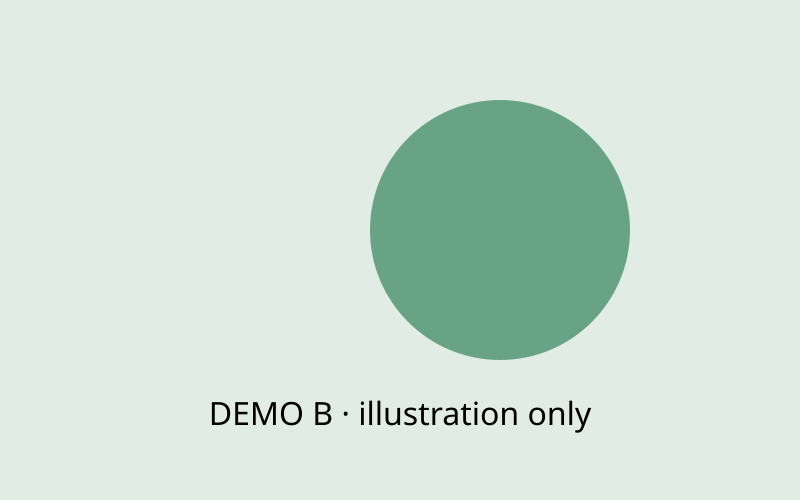

Attributions
项目分工与外部贡献
铜牌基础：使用官方 Attributions Form，并说明队员与外部人员分别做了什么。
NKU26 Wiki · 组件目录 · 本地预览
38 个可以直接在 Tina 里使用的示例，覆盖奖牌页、专项奖和通用页面。写 Word 时照着组件的填写模板组织内容，在 PDF 排版示意里标上组件编号，排版时就能原样搭出来。
10.5 22:00铜牌 / 银牌页 + 专项奖
10.7 22:00通用 / 技术页面 + 可选页面
按组件的填写模板写，字段和后台一一对应。
在页面草图上框出位置，写组件编号和关键设置，例如「D01 折线图｜误差棒 SD」。
图片、CSV、PDF 单独放，文件名和正文、模板里写的一致。
编号规则：P 项目叙事 · D 数据与模型 · M 图像与媒体 · L 版式与导航 · W 文字与结构
按奖项优先级排列。每张卡片列出这一页推荐的组件：点编号跳到示例；「整页加入候选」把推荐组件都放进清单；「Word 骨架」直接下载这一页的填写模板。
最高优先级：4 个基础页面，缺一页都会影响奖牌。
项目分工与外部贡献
铜牌基础：使用官方 Attributions Form，并说明队员与外部人员分别做了什么。
项目贡献
铜牌基础：给未来 iGEM 队伍留下可以直接复用的东西，并说明怎么用。
工程成功
银牌基础：至少一次完整的 Design–Build–Test–Learn；每一步都有证据，Learn 要引出下一步。
人类实践
银牌基础：说明项目为何负责任、对世界有益；和谁交流、为什么是他们。
Best Integrated HP 已确定；Model、Part Collection、Education 中再选两项。内容少的支撑页可以合并。
人类实践主评审页
串联调研 → 反馈 → 项目修改 → 后续验证；外部反馈如何变成技术调整，附修改前后证据。Implementation 与 Reflection 可作为章节。
建模
建模目标、各模型关系、核心结果；与实验或数据对比的验证、敏感性分析；模型如何指导设计；代码与参数可复现。
元件集合
集合的共同目标与整体设计、各元件如何配合、表征数据、使用指南。Registry 集合文档与元件页必须完成，不能由 Wiki 代替。
教育与科普
受众与学习需求、活动设计、双向交流、评估证据与反思、可复用的教育资源、可及性。
建议都写，已有的内容整理进来即可。
项目描述
背景问题、我们的方案、整体思路，一页讲清项目是什么。
设计
设计思路、线路与元件选择依据。
实验结果 / 表征
实验结果与表征数据，附对照、重复与局限。
实验记录与方法
按时间记录进展；方法可复现。
安全
风险识别与应对，实验与使用中的安全措施。
实际应用（可并入 HP）
目标用户、使用场景与流程、部署条件、风险与障碍。
硬件 / 软件
装置结构、使用演示、代码与下载。
团队成员
按人物身份的展示顺序排列，职责标签可多选。
评审导航（首页或独立页）
把每条奖牌与专项奖标准链接到证据页面。
有内容就写，没有可以不写。
合作、可持续、包容性等
已有内容就写；没有可以不写。
工程循环、利益相关者、访谈、项目记录、元件集合、线路图与风险。
点圆环或按「下一步」走完 Design → Build → Test → Learn，再进入下一轮。Engineering 页的主角。
Engineering cycles
Cycle 1 · 方案筛选
问题：哪一种设计更适合目标条件？ - 列出 3 个候选方案 - 确定比较指标和对照
构建三种候选版本，记录版本号与关键改动。 此处只演示页面组织。
在统一条件下测量，保存原始数据。 下方图表组件可以展示曲线与误差棒。
结论 → 证据 → 局限 → 下一步。 示例：方案 B 响应更快，但背景偏高，进入第 2 轮优化。
Cycle 2 · 降低背景
基于第 1 轮的问题提出改动：调整一个调控元件。
构建改动后的版本。
与第 1 轮最佳方案对照测试。
记录改动是否解决问题，以及仍存在的局限。
两轮均为虚构示例，只演示页面结构。
| 字段 | 填写说明 |
|---|---|
| 模块标题 | |
| 轮次 × 3（按需增减，每条都填以下各项） | |
| 轮次名称 | 例如 Cycle 1 · 启动子筛选 |
| Design 设计 | 可用加粗、链接、「- 」列表 |
| Build 构建 | 可用加粗、链接、「- 」列表 |
| Test 测试 | 可用加粗、链接、「- 」列表 |
| Learn 学习 / 下一步 | 可用加粗、链接、「- 」列表 |
| 详细数据链接 | |
| 说明 / 数据来源 | 显示在模块下方，写清来源、样本量或限制。 |
中文、英文各写一份；图片、CSV 等附件的文件名要和表中一致。
P01 工程循环｜2 轮｜每轮 D/B/T/L 各一段
每一轮的四段文字；可链接到数据图或 Notebook。
Tina → Wiki 内页 → 选页面 → 正文排版 ＋ → 「工程循环 DBTL（多轮）」
按「影响力 × 关注程度」摆放对象，点圆点看诉求与回应；说明为什么选这些群体。
Stakeholder map
学术专家（示例）
学界
关注技术可行性与验证方法。 回应：邀请参与方案评审。
一线使用者（示例）
使用者
关注操作是否简单、结果是否可靠。
监管部门（示例）
政府
关注生物安全与合规要求。
相关企业（示例）
产业
关注成本与规模化。
公众（示例）
公众
关注安全性与伦理问题。
中学生（示例）
公众
科普对象，关注是否有趣、易懂。
对象与分值为虚构示例；实际填写时写明打分依据。
| 字段 | 填写说明 |
|---|---|
| 模块标题 | |
| 对象 × 3（按需增减，每条都填以下各项） | |
| 名称 / 身份 | |
| 类别 | 例如 学界 / 产业 / 政府 / 公众 / 使用者。 |
| 影响力（1–5） | |
| 关注程度（1–5） | |
| 诉求 / 担忧 / 我们的回应 | 可用加粗、链接、「- 」列表 |
| 相关页面链接 | 站内写 /engineering#cycle-2，站外写完整 https 地址。 |
| 横轴名称 | 默认「关注程度」 |
| 纵轴名称 | 默认「影响力」 |
| 说明 / 数据来源 | 显示在模块下方，写清来源、样本量或限制。 |
中文、英文各写一份；图片、CSV 等附件的文件名要和表中一致。
P03 利益相关者矩阵｜6 个对象｜附打分依据
对象名称、类别、影响力与关注程度（1–5）、诉求与我们的回应。
Tina → Wiki 内页 → 选页面 → 正文排版 ＋ → 「利益相关者矩阵」
头像、代表性原话、要点、对项目的影响和可展开的问答全文，一次访谈一张卡。
Interview · 示例访谈
受访者 A（虚构）
2026-07 · 线上访谈（示例）
示例身份 · 某研究机构
这是一句示例原话。正式页面只放受访者同意公开的内容。
关注真实使用场景 需要补充安全评估 建议简化结果读取方式
根据建议，我们在设计中加入了额外的安全措施，并重写了使用说明。
您如何看待这个方向？
示例回答：可节选，保留原意。
您最担心的问题是什么？
示例回答：……
对我们有什么建议？
示例回答：……
虚构访谈，没有真实受访者或个人资料。
| 字段 | 填写说明 |
|---|---|
| 模块标题 | |
| 受访者 | |
| 身份 / 单位 | |
| 日期 / 形式 | |
| 照片（可选） | 写附件文件名 |
| 一句代表性原话 | 须经受访者同意公开。 |
| 问答 × 3（按需增减，每条都填以下各项） | |
| 问题 | |
| 回答（可节选） | 可用加粗、链接、「- 」列表 |
| 要点（每行一条） | 可用加粗、链接、「- 」列表 |
| 对项目的影响 | 可用加粗、链接、「- 」列表 |
| 相关页面链接 | 站内写 /engineering#cycle-2，站外写完整 https 地址。 |
| 说明 / 数据来源 | 显示在模块下方，写清来源、样本量或限制。 |
中文、英文各写一份；图片、CSV 等附件的文件名要和表中一致。
P04 访谈卡｜受访者 A｜含 3 个问答
受访者姓名/身份（须同意公开）、日期形式、原话、问答节选、要点、对项目的影响。
Tina → Wiki 内页 → 选页面 → 正文排版 ＋ → 「访谈记录卡」
按分类筛选；湿实验、干实验和 HP 的进展放在同一条时间线上。
Project notebook · 跨组记录
需求与假设 · 1
2026 / 01
演示记录：本阶段输入 → 形成的材料 → 反馈 → 下一步调整。
Wet Lab
方案比较 · 2
2026 / 02
演示记录：本阶段输入 → 形成的材料 → 反馈 → 下一步调整。
Dry Lab
阶段复盘 · 3
2026 / 03
演示记录：本阶段输入 → 形成的材料 → 反馈 → 下一步调整。
HP
需求与假设 · 4
2026 / 04
演示记录：本阶段输入 → 形成的材料 → 反馈 → 下一步调整。
Wet Lab
方案比较 · 5
2026 / 05
演示记录：本阶段输入 → 形成的材料 → 反馈 → 下一步调整。
Dry Lab
阶段复盘 · 6
2026 / 06
演示记录：本阶段输入 → 形成的材料 → 反馈 → 下一步调整。
HP
需求与假设 · 7
2026 / 07
演示记录：本阶段输入 → 形成的材料 → 反馈 → 下一步调整。
Wet Lab
方案比较 · 8
2026 / 08
演示记录：本阶段输入 → 形成的材料 → 反馈 → 下一步调整。
Dry Lab
阶段复盘 · 9
2026 / 09
演示记录：本阶段输入 → 形成的材料 → 反馈 → 下一步调整。
HP
演示素材，不是 NKU 实验结果。
| 字段 | 填写说明 |
|---|---|
| 模块标题 | |
| 事件 × 3（按需增减，每条都填以下各项） | |
| 日期 / 阶段 | |
| 事件标题 | |
| 组别 / 分类 | 同一分类写法保持一致，读者可按分类筛选。 |
| 过程与反馈 | 可用加粗、链接、「- 」列表 |
| 相关页面链接 | |
| 说明 / 数据来源 | 显示在模块下方，写清来源、样本量或限制。 |
中文、英文各写一份；图片、CSV 等附件的文件名要和表中一致。
P05 时间线｜按月｜分类=Wet Lab/Dry Lab/HP
日期或阶段、分类、标题、过程与反馈。
Tina → Wiki 内页 → 选页面 → 正文排版 ＋ → 「Notebook / HP 时间线」
旧版编号 03
按类型筛选、搜索、卡片 / 表格切换；每个元件显示 SBOL 图形、作用和 Registry 链接。
Part collection · 演示元件
Promoter A
集合的输入：感应信号
New
示例说明：元件的功能与适用条件。
120 bp
RBS set
调节表达强度
Existing
示例说明。
18 bp
Reporter X
输出：可检测信号
Improved
示例说明：改进点与对比数据链接。
720 bp
Terminator T
终止转录
Existing
示例说明。
80 bp
Sensor device
完整检测单元
New
由 P001–P004 组合而成。
1 050 bp
Operator O
调控位点
New
示例说明。
24 bp
编号均为演示，不是 Registry 注册信息。正式评审以 Registry 页面为准。
| 字段 | 填写说明 |
|---|---|
| 模块标题 | |
| 元件 × 3（按需增减，每条都填以下各项） | |
| 编号 | 例如 BBa_K0000000；Registry 页面为正式评审材料。 |
| 名称 | |
| 类型 | 启动子 Promoter / RBS / 编码序列 CDS / 终止子 Terminator / 操纵子 / 调控位点 / 复制起点 Ori / 绝缘子 Insulator / 复合元件 Composite / 质粒 / 骨架 / 其他 |
| 状态 | 例如 New / Improved / Existing。 |
| 在集合中的作用 | |
| 功能说明 | 可用加粗、链接、「- 」列表 |
| 长度 | 例如 1 020 bp |
| Registry 链接 | |
| 说明 / 数据来源 | 显示在模块下方，写清来源、样本量或限制。 |
中文、英文各写一份；图片、CSV 等附件的文件名要和表中一致。
P07 元件集合｜6 个元件｜默认卡片视图
编号、名称、类型、状态（New/Improved）、在集合中的作用、功能说明、长度、Registry 链接。
Tina → Wiki 内页 → 选页面 → 正文排版 ＋ → 「元件集合（Part Collection）」
按顺序填元件类型即可自动画出标准 SBOL 线路图；点击元件看说明。
Sensor device · 线路示意
感应输入信号的启动子（示例）。
Promoter A
调控位点（示例）。
Operator O
核糖体结合位点（示例）。
RBS
报告蛋白编码序列（示例）。
Reporter X
终止子（示例）。
Term T
组成型启动子（示例）。
Promoter B
RBS
调控蛋白（示例）。
Regulator R
Term T2
线路为虚构示例，只演示绘图方式。
| 字段 | 填写说明 |
|---|---|
| 模块标题 | |
| 元件 × 3（按需增减，每条都填以下各项） | |
| 类型 | 启动子 Promoter / RBS / 编码序列 CDS / 终止子 Terminator / 操纵子 / 调控位点 / 复制起点 Ori / 绝缘子 Insulator / 其他 |
| 标签 | |
| 说明（点击元件时显示） | 可用加粗、链接、「- 」列表 |
| 说明 / 数据来源 | 显示在模块下方，写清来源、样本量或限制。 |
中文、英文各写一份；图片、CSV 等附件的文件名要和表中一致。
P08 线路图｜9 个元件｜顺序见下表
按顺序列出每个元件的类型、标签和一句说明。
Tina → Wiki 内页 → 选页面 → 正文排版 ＋ → 「基因线路图（SBOL）」
按可能性 × 严重程度定位风险，每条附应对措施；适合 Safety 和 Implementation。
Risk assessment · 示例
工程菌意外释放
示例风险说明。
示例：物理隔离 + 使用后灭活。
使用者操作失误
示例风险说明。
示例：简化步骤并提供图示说明。
数据隐私
示例风险说明。
示例：不收集可识别个人信息。
结果被误读
示例风险说明。
示例：说明书中注明结果的适用范围。
风险与评分为示例，实际评估请依据学校与 iGEM 安全规则。
| 字段 | 填写说明 |
|---|---|
| 模块标题 | |
| 风险 × 3（按需增减，每条都填以下各项） | |
| 风险名称 | |
| 可能性（1–5） | |
| 严重程度（1–5） | |
| 风险说明 | 可用加粗、链接、「- 」列表 |
| 应对措施 | 可用加粗、链接、「- 」列表 |
| 说明 / 数据来源 | 显示在模块下方，写清来源、样本量或限制。 |
中文、英文各写一份；图片、CSV 等附件的文件名要和表中一致。
P10 风险矩阵｜4 条｜附应对措施
风险名称、可能性与严重程度（1–5）、说明、应对措施。
Tina → Wiki 内页 → 选页面 → 正文排版 ＋ → 「风险矩阵（安全 / 实施）」
自动识别文件类型；可写适用对象和许可。Contribution、Education 资源和 Model 复现都用它。
Supplementary materials
演示数据 CSV
用于了解表格文件格式。
所有读者
CC BY 4.0（示例）
公开示例结构 1CRN
来源 RCSB PDB；不是本项目结构。
公开 PDF 示例
Mozilla PDF.js 官方展示文档。
交互 HTML 演示
自包含的图形演示页面。
未来 iGEM 队伍
演示素材，不是 NKU 实验结果。
| 字段 | 填写说明 |
|---|---|
| 模块标题 | |
| 附件 × 3（按需增减，每条都填以下各项） | |
| 附件名称 | |
| 附件文件 | 写附件文件名 |
| 说明 / 版本 / 文件大小 | 可用加粗、链接、「- 」列表 |
| 适用对象 / 用途 | 可选，例如「未来 iGEM 队伍」「中学教师」。 |
| 许可 / 版本 | 可选，例如 CC BY 4.0 · v2。 |
| 说明 / 数据来源 | 显示在模块下方，写清来源、样本量或限制。 |
中文、英文各写一份；图片、CSV 等附件的文件名要和表中一致。
P14 附件区｜4 个文件
文件本身、显示名称、说明/版本/大小、适用对象、许可。
Tina → Wiki 内页 → 选页面 → 正文排版 ＋ → 「附件下载 / 可复用资源」
旧版编号 08
图表、表格、热图、比较矩阵、公式、参数、代码、序列与结构。
误差列命名为「列名 ±」即可显示误差棒；点图例隐藏系列、悬停看数值、下载 PNG、展开原始数据。
Response curves
Time (h)
Signal (a.u.)
程序生成的演示数字；误差棒仅演示显示方式，无统计推断。
| 字段 | 填写说明 |
|---|---|
| 模块标题 | |
| CSV 文件 | 写附件文件名（.csv） |
| 或粘贴 CSV（首列 X，其余列 Y，文件优先） | 误差列命名为「列名 ±」或「列名_sd」，放在对应数据列右侧，即可显示误差棒。 |
| 图表类型 | 折线图 / 柱状图 / 散点图 / 横向条形图 / 百分比堆叠（问卷 / 构成） |
| 横轴名称 / 单位 | |
| 纵轴名称 / 单位 | |
| 说明 / 数据来源 | 显示在模块下方，写清来源、样本量或限制。 |
中文、英文各写一份；图片、CSV 等附件的文件名要和表中一致。
D01 折线图｜误差棒=SD｜数据=fig3.csv
CSV：首列横轴，其余列为各组数值；误差列放在对应列右侧。写清单位与重复数。
Tina → Wiki 内页 → 选页面 → 正文排版 ＋ → 「实验数据图表」
旧版编号 10
条件对比、诱导梯度等离散比较。误差列命名为「列名_sd」同样有效。
Design comparison
Inducer level
Signal (a.u.)
程序生成的演示数字。
| 字段 | 填写说明 |
|---|---|
| 模块标题 | |
| CSV 文件 | 写附件文件名（.csv） |
| 或粘贴 CSV（首列 X，其余列 Y，文件优先） | 误差列命名为「列名 ±」或「列名_sd」，放在对应数据列右侧，即可显示误差棒。 |
| 图表类型 | 折线图 / 柱状图 / 散点图 / 横向条形图 / 百分比堆叠（问卷 / 构成） |
| 横轴名称 / 单位 | |
| 纵轴名称 / 单位 | |
| 说明 / 数据来源 | 显示在模块下方，写清来源、样本量或限制。 |
中文、英文各写一份；图片、CSV 等附件的文件名要和表中一致。
D02 柱状图｜2 组｜误差棒
同 D01。
Tina → Wiki 内页 → 选页面 → 正文排版 ＋ → 「实验数据图表」
旧版编号 11
模型预测 vs 实验测量、两个变量的关系。第一列需为数字。
Data distribution
Time (arbitrary units)
Response (arbitrary units)
程序生成的演示数字；无拟合、误差棒或统计推断。
| 字段 | 填写说明 |
|---|---|
| 模块标题 | |
| CSV 文件 | 写附件文件名（.csv） |
| 或粘贴 CSV（首列 X，其余列 Y，文件优先） | 误差列命名为「列名 ±」或「列名_sd」，放在对应数据列右侧，即可显示误差棒。 |
| 图表类型 | 折线图 / 柱状图 / 散点图 / 横向条形图 / 百分比堆叠（问卷 / 构成） |
| 横轴名称 / 单位 | |
| 纵轴名称 / 单位 | |
| 说明 / 数据来源 | 显示在模块下方，写清来源、样本量或限制。 |
中文、英文各写一份；图片、CSV 等附件的文件名要和表中一致。
D03 散点图｜x=预测 y=测量
CSV：首列 X（数字），其余列 Y。
Tina → Wiki 内页 → 选页面 → 正文排版 ＋ → 「实验数据图表」
旧版编号 12
类别名较长时用横向；适合问卷多选统计、排名或敏感性（可含负值）。
受访者最关心的问题（多选）
人数
虚构问卷数据，仅演示图形。
| 字段 | 填写说明 |
|---|---|
| 模块标题 | |
| CSV 文件 | 写附件文件名（.csv） |
| 或粘贴 CSV（首列 X，其余列 Y，文件优先） | 误差列命名为「列名 ±」或「列名_sd」，放在对应数据列右侧，即可显示误差棒。 |
| 图表类型 | 折线图 / 柱状图 / 散点图 / 横向条形图 / 百分比堆叠（问卷 / 构成） |
| 横轴名称 / 单位 | |
| 纵轴名称 / 单位 | |
| 说明 / 数据来源 | 显示在模块下方，写清来源、样本量或限制。 |
中文、英文各写一份；图片、CSV 等附件的文件名要和表中一致。
D04 横向条形｜问卷 Q3｜n=?
CSV：首列类别，第二列起为数值；写明样本量与题目原文。
Tina → Wiki 内页 → 选页面 → 正文排版 ＋ → 「实验数据图表」
五级量表、前测 / 后测对比、构成比例。颜色从「不同意」到「同意」渐变。
活动前后：我能解释什么是合成生物学
虚构问卷数据；各行按总数换算为百分比。
| 字段 | 填写说明 |
|---|---|
| 模块标题 | |
| CSV 文件 | 写附件文件名（.csv） |
| 或粘贴 CSV（首列 X，其余列 Y，文件优先） | 误差列命名为「列名 ±」或「列名_sd」，放在对应数据列右侧，即可显示误差棒。 |
| 图表类型 | 折线图 / 柱状图 / 散点图 / 横向条形图 / 百分比堆叠（问卷 / 构成） |
| 横轴名称 / 单位 | |
| 纵轴名称 / 单位 | |
| 说明 / 数据来源 | 显示在模块下方，写清来源、样本量或限制。 |
中文、英文各写一份；图片、CSV 等附件的文件名要和表中一致。
D05 Likert 堆叠｜前测/后测
CSV：首列为组别或题目，其余列为各等级人数（按从负到正排列）。
Tina → Wiki 内页 → 选页面 → 正文排版 ＋ → 「实验数据图表」
搜索、数字排序、翻页、下载 CSV；单元格中的 https 地址自动变成链接。
Parts catalogue · 虚构条目
全部 ID 和数字均为演示，不是 Registry 注册信息。
| 字段 | 填写说明 |
|---|---|
| 模块标题 | |
| CSV 文件 | 写附件文件名（.csv） |
| 或粘贴 CSV（首行为列名，文件优先） | 单元格中的 https 地址会显示为链接。 |
| 说明 / 数据来源 | 显示在模块下方，写清来源、样本量或限制。 |
中文、英文各写一份；图片、CSV 等附件的文件名要和表中一致。
D06 数据表｜数据=table.csv
CSV：第一行为列名。
Tina → Wiki 内页 → 选页面 → 正文排版 ＋ → 「数据表 / Parts 表（搜索排序）」
旧版编号 09
A–H × 1–12 自动画成孔板；其他矩阵画成热图，支持双向色阶（敏感性分析）。
Plate reader · 示例孔板
RFU
程序生成的演示数值；第 12 列留空演示缺失孔。
局部敏感性 · 示例
虚构的敏感性系数，仅演示双向色阶。
| 字段 | 填写说明 |
|---|---|
| 模块标题 | |
| CSV 文件 | 写附件文件名（.csv） |
| 或粘贴 CSV | 首行列名，首列行名；A–H × 1–12 自动显示为孔板。 |
| 色阶 | 紫色（单向） / 琥珀（单向） / 双向（负—正） |
| 数值单位 | |
| 在格子中显示数值 | 是 / 否 |
| 说明 / 数据来源 | 显示在模块下方，写清来源、样本量或限制。 |
中文、英文各写一份；图片、CSV 等附件的文件名要和表中一致。
D07 热图｜孔板 / 敏感性｜色阶=紫/双向
CSV：首行列名、首列行名；写明单位与色阶选择。
Tina → Wiki 内页 → 选页面 → 正文排版 ＋ → 「热图 / 96 孔板」
✓ ✗ ~ 与 1–5 分自动变成符号；标出最终方案。适合设计选择和 Implementation 论证。
为什么选方案 B
方案 B
虚构评分，仅演示比较方式；分数越高越好。
| 字段 | 填写说明 |
|---|---|
| 模块标题 | |
| CSV 文件 | 写附件文件名（.csv） |
| 或粘贴 CSV | 首列方案，首行标准。单元格可写 ✓ ✗ ~、1–5 分或短文字。 |
| 最终选择的方案 | 与首列名称一致，该行会被标出。 |
| 说明 / 数据来源 | 显示在模块下方，写清来源、样本量或限制。 |
中文、英文各写一份；图片、CSV 等附件的文件名要和表中一致。
D08 比较矩阵｜3 方案｜选中=方案 B
表格：首列方案，首行评价标准；写明评分方向与依据。
Tina → Wiki 内页 → 选页面 → 正文排版 ＋ → 「方案比较矩阵」
多行方程、矩阵、求和与下标；可加编号，读者可复制 LaTeX。
Model notation
(1)
通用数学排版示例，不是本项目模型或拟合结果。
| 字段 | 填写说明 |
|---|---|
| 模块标题 | |
| LaTeX 公式（不需要 $$） | 可用加粗、链接、「- 」列表 |
| 公式编号 | 可选，例如 (1) 或 Eq. 2。 |
| 说明 / 数据来源 | 显示在模块下方，写清来源、样本量或限制。 |
中文、英文各写一份；图片、CSV 等附件的文件名要和表中一致。
D09 公式 (1)｜LaTeX 见附件
LaTeX 源码（不要截图）；需要编号就写编号。
Tina → Wiki 内页 → 选页面 → 正文排版 ＋ → 「数学公式（LaTeX）」
旧版编号 14
符号自动用 LaTeX 排版；来源分「文献 / 实验测定 / 拟合 / 估计 / 假设」，可筛选。
Parameters · 示例
文献
降解速率
0.12
h⁻¹
k_{deg}
拟合
最大反应速率
3.4
μM·h⁻¹
V_{\max}
文献
米氏常数
15
μM
K_m
假设
Hill 系数
2
—
n
实验测定
背景表达比例
0.03
—
\alpha
参数值为示例，不对应任何真实系统。
| 字段 | 填写说明 |
|---|---|
| 模块标题 | |
| 参数 × 3（按需增减，每条都填以下各项） | |
| 符号（LaTeX） | 例如 k_{deg} 或 V_{\max} |
| 含义 | |
| 数值 | |
| 单位 | |
| 来源类型 | 文献 / 实验测定 / 拟合 / 估计 / 假设 |
| 来源链接 | |
| 说明 / 数据来源 | 显示在模块下方，写清来源、样本量或限制。 |
中文、英文各写一份；图片、CSV 等附件的文件名要和表中一致。
D10 参数表｜5 个参数｜含来源
每个参数：符号（LaTeX）、含义、数值、单位、来源类型、来源链接。
Tina → Wiki 内页 → 选页面 → 正文排版 ＋ → 「模型参数表」
带行号和复制按钮的代码块，附运行命令与仓库链接；Model 的 Reproducibility 必备。
Reproduce the model
simulate.py
python simulate.py
玩具模型代码，仅演示排版；不是本项目模型。
| 字段 | 填写说明 |
|---|---|
| 模块标题 | |
| 文件名 | |
| 语言 | 例如 Python、R、MATLAB。 |
| 代码 | 可用加粗、链接、「- 」列表 |
| 运行命令 | 例如 python simulate.py --seed 1 |
| 相关页面链接 | 站内写 /engineering#cycle-2，站外写完整 https 地址。 |
| 说明 / 数据来源 | 显示在模块下方，写清来源、样本量或限制。 |
中文、英文各写一份；图片、CSV 等附件的文件名要和表中一致。
D11 代码｜simulate.py｜附运行命令
代码文件、语言、运行命令、仓库链接（GitLab / GitHub）。
Tina → Wiki 内页 → 选页面 → 正文排版 ＋ → 「代码与复现」
按区域命名高亮（例如「12-48 启动子」），查找所有匹配并逐个跳转，复制序列或反向互补。
DNA sequence · 多区域高亮
12-48 区域 A, 100-160 区域 B, 250-290 区域 C
演示素材，不是 NKU 实验结果。
Protein sequence · 字母与位置
20-40, 90-110
人工重复氨基酸序列，不对应真实蛋白。
| 字段 | 填写说明 |
|---|---|
| 模块标题 | |
| 序列类型 | dna / rna / protein |
| FASTA / 文本文件 | 写附件文件名（.fasta / .fa / .faa / .fna / .txt） |
| 或粘贴单条序列 / FASTA（文件优先） | 可用加粗、链接、「- 」列表 |
| 高亮区域 | 例如「12-48 启动子, 100-160 RBS」；名称可省略。 |
| 说明 / 数据来源 | 显示在模块下方，写清来源、样本量或限制。 |
中文、英文各写一份；图片、CSV 等附件的文件名要和表中一致。
D12 序列｜FASTA=xxx.fasta｜高亮 3 段
单条 FASTA 或序列文本；高亮区间与名称。
Tina → Wiki 内页 → 选页面 → 正文排版 ＋ → 「DNA / 蛋白序列阅读器」
旧版编号 13
拖动旋转、缩放；切换丝带 / 球棍 / 原子球 / 表面，自动旋转和复位。
| 字段 | 填写说明 |
|---|---|
| 结构文件名 | .pdb / .cif |
| 初始显示方式 | 丝带 / 球棍 / 原子球 / 分子表面 |
| 突出显示的链 | 例如 A |
| 突出显示的残基 | 例如 42,57,100-105 |
| 图注与来源 | 写明结构来源（PDB 编号或预测工具） |
中文、英文各写一份；图片、CSV 等附件的文件名要和表中一致。
D13 蛋白结构｜xxx.pdb｜突出残基 42,57
PDB / CIF 文件；可选链与残基编号；写明结构来源。
Tina → Wiki 内页 → 选页面 → 正文排版 ＋ → 「蛋白质结构（可旋转）」
旧版编号 15
单图、并排、相册、前后对比、图片标注、视频、PDF 与 HTML 交互。
图片、图注和来源。最常用的组件。

| 字段 | 填写说明 |
|---|---|
| 图片文件名 | 与附件一致，例如 fig2-gel.png |
| 图片说明（alt） | 一句话描述画面，给读屏软件 |
| 图注 | Fig. 编号 + 读图方式 + 来源 |
中文、英文各写一份；图片、CSV 等附件的文件名要和表中一致。
M01 单图｜fig1.png｜图注见正文
原图、图片说明、图注和来源。
Tina → Wiki 内页 → 选页面 → 正文排版 ＋ → 「图片与图注」
旧版编号 19
两张图各自说明，底部统一图注。

Fig. 2 两种图形方案，仅作排版演示。
| 字段 | 填写说明 |
|---|---|
| 左图文件名 | |
| 左图说明 | |
| 右图文件名 | |
| 右图说明 | |
| 统一图注 |
中文、英文各写一份；图片、CSV 等附件的文件名要和表中一致。
M02 双图｜左 fig2a 右 fig2b
两张原图、各自说明和统一图注。
Tina → Wiki 内页 → 选页面 → 正文排版 ＋ → 「双图并排」
旧版编号 20
独立图注与来源行；适合设计组绘制的示意图和信息图。
| 字段 | 填写说明 |
|---|---|
| 图片 / SVG 文件名 | |
| 图注 | Fig. 编号 + 说明 |
| 来源 / 版权 |
中文、英文各写一份；图片、CSV 等附件的文件名要和表中一致。
M03 图形容器｜infographic.svg
图片或 SVG、图注、来源。
Tina → Wiki 内页 → 选页面 → 正文排版 ＋ → 「排版模块」，类型选 figure
旧版编号 32
点缩略图放大，方向键翻页；5 张以上自动把第一张放大为封面。
Visual archive · 图像档案
Figure 1 · 设计示意
图 1：独立图注与来源说明。人工绘制的图形，用于展示相册交互。
Figure 2 · 设计示意
图 2：独立图注与来源说明。人工绘制的图形，用于展示相册交互。
Figure 3 · 设计示意
图 3：独立图注与来源说明。人工绘制的图形，用于展示相册交互。
Figure 4 · 设计示意
图 4：独立图注与来源说明。人工绘制的图形，用于展示相册交互。
Figure 5 · 设计示意
图 5：独立图注与来源说明。人工绘制的图形，用于展示相册交互。
Figure 6 · 设计示意
图 6：独立图注与来源说明。人工绘制的图形，用于展示相册交互。
演示素材，不是 NKU 实验结果。
| 字段 | 填写说明 |
|---|---|
| 模块标题 | |
| 图片 × 3（按需增减，每条都填以下各项） | |
| 图片 | 写附件文件名 |
| 图片说明 | |
| 图注 | 可用加粗、链接、「- 」列表 |
| 说明 / 数据来源 | 显示在模块下方，写清来源、样本量或限制。 |
中文、英文各写一份；图片、CSV 等附件的文件名要和表中一致。
M04 相册｜6 张｜每张附图注
多张原图，每张附标题与图注。
Tina → Wiki 内页 → 选页面 → 正文排版 ＋ → 「多图相册 / 放大阅读」
旧版编号 05
拖动分界线比较；适合改版、处理前后或两个方案。IHP「修改前后证据」很好用。
Design A / Design B
方案 A
方案 B
演示素材，不是 NKU 实验结果。
| 字段 | 填写说明 |
|---|---|
| 模块标题 | |
| 左侧 / 修改前图片 | 写附件文件名 |
| 右侧 / 修改后图片 | 写附件文件名 |
| 左图说明 | |
| 右图说明 | |
| 说明 / 数据来源 | 显示在模块下方，写清来源、样本量或限制。 |
中文、英文各写一份；图片、CSV 等附件的文件名要和表中一致。
M05 前后对比｜左=修改前 右=修改后
两张尺寸一致的对照图片与各自说明。
Tina → Wiki 内页 → 选页面 → 正文排版 ＋ → 「前后图片对比」
旧版编号 06
在图片上放编号点，右侧列出说明；点编号互相定位。适合凝胶泳道、硬件结构、海报细节。
Gel · 泳道说明（示意图）
Marker
分子量标准（示意）。
样品 1
示例说明。
样品 2
示例说明。
阴性对照
示例说明。
目标条带位置
示例：说明期望大小与判断依据。
人工绘制的凝胶示意图，不是实验图像。
| 字段 | 填写说明 |
|---|---|
| 模块标题 | |
| 图片 | 写附件文件名 |
| 标注 × 3（按需增减，每条都填以下各项） | |
| 横向位置（0–100%） | |
| 纵向位置（0–100%） | |
| 标注名称 | |
| 说明 | 可用加粗、链接、「- 」列表 |
| 说明 / 数据来源 | 显示在模块下方，写清来源、样本量或限制。 |
中文、英文各写一份；图片、CSV 等附件的文件名要和表中一致。
M06 图片标注｜gel.png｜5 个点
原图；每个标注点的位置（约几成宽、几成高）、名称与说明。
Tina → Wiki 内页 → 选页面 → 正文排版 ＋ → 「图片标注（凝胶 / 装置 / 海报）」
原生播放器；可配封面和 VTT 字幕，右上角提供下载。
Video · 演示片段
3 秒纯色示例，用于演示播放控件，不是项目视频。
| 字段 | 填写说明 |
|---|---|
| 模块标题 | |
| MP4 / WebM 文件 | 写附件文件名（.mp4 / .webm） |
| 封面 | 写附件文件名 |
| WebVTT 字幕 | 写附件文件名（.vtt） |
| 字幕语言代码（如 zh 或 en） | |
| 说明 / 数据来源 | 显示在模块下方，写清来源、样本量或限制。 |
中文、英文各写一份；图片、CSV 等附件的文件名要和表中一致。
M07 视频｜promo.mp4｜中文字幕
MP4 / WebM，可选封面与 VTT 字幕。
Tina → Wiki 内页 → 选页面 → 正文排版 ＋ → 「视频 / 字幕」
旧版编号 07
多页文档直接嵌入；顶部提供新窗口打开和下载。具体工具栏随浏览器而异。
| 字段 | 填写说明 |
|---|---|
| PDF 文件名 | |
| 标题 | |
| 说明 | 一句话告诉读者这份 PDF 是什么 |
中文、英文各写一份；图片、CSV 等附件的文件名要和表中一致。
M08 PDF｜handbook.pdf｜高 700
PDF 文件、标题和说明。
Tina → Wiki 内页 → 选页面 → 正文排版 ＋ → 「PDF 阅读器」
旧版编号 16
嵌入自制的小网页（参数滑块、交互模型、小游戏），在隔离环境运行。
| 字段 | 填写说明 |
|---|---|
| HTML 文件 / 文件夹名 | 多文件作品整理成文件夹 |
| 是否需要脚本交互 | 是 / 否 |
| 标题 | |
| 说明 |
中文、英文各写一份；图片、CSV 等附件的文件名要和表中一致。
M09 HTML 交互｜model-demo/index.html
单文件 HTML，或整理好依赖文件的作品文件夹。
Tina → Wiki 内页 → 选页面 → 正文排版 ＋ → 「HTML 阅读 / 交互演示」
旧版编号 17
分栏切换、折叠问答、流程图与经典时间线。
同一位置切换多段内容，底部可一键进入下一栏；适合多个模型、多种受众或中英对照。
Cycle 02 · Design → Build → Test → Learn
Design 设计
问题：如何比较多个候选方案？ 假设：统一输入条件后，不同方案将表现出不同响应曲线。 交付：比较矩阵、评价指标、下一步计划。
Build 构建
展示构建设计、版本记录和关键选择。 可在后续模块插入结构模型、序列和设计文件。 此处仅为页面组织示例。
Test 评价
整理对照条件、原始数据与重复记录。 下方图表组件可以展示多组曲线。 示例不构成实验方法或真实结果。
Learn 迭代
结论 → 证据 → 局限 → 下一轮改动。 将反馈与设计决策对应，形成可追溯的迭代记录。
演示素材，不是 NKU 实验结果。
| 字段 | 填写说明 |
|---|---|
| 模块标题 | |
| 条目 × 3（按需增减，每条都填以下各项） | |
| 条目标题 | |
| 内容（保留换行） | 可用加粗、链接、「- 」列表 |
| 说明 / 数据来源 | 显示在模块下方，写清来源、样本量或限制。 |
中文、英文各写一份；图片、CSV 等附件的文件名要和表中一致。
L05 分栏｜4 栏
每栏标题与内容。
Tina → Wiki 内页 → 选页面 → 正文排版 ＋ → 「分栏切换 / 工程循环」
旧版编号 01
逐条展开；访谈全文、FAQ、Reflection 中「采纳 / 未采纳的建议」都适合。
Stakeholder interview · 访谈记录
01 背景与需求
角色：虚构的使用者 A。 场景：希望快速找到页面中的核心结论。 需求：先看到摘要，再按需展开证据。
02 反馈如何影响设计？
反馈：长篇内容不易浏览。 改动：使用折叠问答、图片说明和下载附件。 后续：记录是否满足使用者需要。
03 如何展示引用与授权？
填写实际访谈日期、公开范围、引用方式。 示例中没有真实受访者或个人资料。
演示素材，不是 NKU 实验结果。
| 字段 | 填写说明 |
|---|---|
| 模块标题 | |
| 条目 × 3（按需增减，每条都填以下各项） | |
| 条目标题 | |
| 内容（保留换行） | 可用加粗、链接、「- 」列表 |
| 说明 / 数据来源 | 显示在模块下方，写清来源、样本量或限制。 |
中文、英文各写一份；图片、CSV 等附件的文件名要和表中一致。
L06 折叠问答｜3 条
每条问题与回答。
Tina → Wiki 内页 → 选页面 → 正文排版 ＋ → 「折叠问答 / 访谈记录」
旧版编号 02
宽屏横排、窄屏竖排；每步可标角色。适合 Implementation 使用流程和项目技术路线。
示例使用流程
采集样本
示例：说明谁在什么场景下采集。
使用者
加入检测装置
示例：一步操作。
使用者
读取结果
示例：颜色分级，对照说明书判断。
使用者
安全处理
示例：使用后灭活并按规定丢弃。
使用者
反馈改进
示例：收集使用反馈，进入下一轮设计。
团队
流程为示意，不代表已实现的产品。
| 字段 | 填写说明 |
|---|---|
| 模块标题 | |
| 步骤 × 3（按需增减，每条都填以下各项） | |
| 步骤名称 | |
| 说明 | 可用加粗、链接、「- 」列表 |
| 角色 / 场景标签 | 可选，例如 用户、医院、我们。 |
| 说明 / 数据来源 | 显示在模块下方，写清来源、样本量或限制。 |
中文、英文各写一份；图片、CSV 等附件的文件名要和表中一致。
L07 流程图｜5 步｜标注角色
每步名称、说明、角色 / 场景标签。
Tina → Wiki 内页 → 选页面 → 正文排版 ＋ → 「流程图（使用场景 / 技术路线）」
静态纵向时间线，支持富文本和链接。
阶段 01
提出问题并整理资料。
阶段 02
比较方案，记录选择依据。
阶段 03
汇总反馈，规划下一轮。
| 字段 | 填写说明 |
|---|---|
| 节点 × 4（按需增减，每条都填以下各项） | |
| 阶段 / 时间 | |
| 标题 | |
| 说明 | |
中文、英文各写一份；图片、CSV 等附件的文件名要和表中一致。
L08 时间线｜3 节点
每个节点：阶段/时间、标题、说明。
Tina → Wiki 内页 → 选页面 → 正文排版 ＋ → 「排版模块」，类型选 timeline
旧版编号 26
说明、建议、注意提示框与折叠详情。
补充说明、适用范围、官方要求链接。
说明
这是一段 可强调的提示内容。
| 字段 | 填写说明 |
|---|---|
| 提示标题 | |
| 提示正文 | 1–3 句，可含列表 |
中文、英文各写一份；图片、CSV 等附件的文件名要和表中一致。
W03 说明框
标题与 1–3 句正文。
Tina → Wiki 内页 → 选页面 → 正文排版 ＋ → 「排版模块」，类型选 note
旧版编号 21
给读者或未来队伍的建议、复用提示。
阅读建议
这是一段 可强调的提示内容。
| 字段 | 填写说明 |
|---|---|
| 提示标题 | |
| 提示正文 | 1–3 句，可含列表 |
中文、英文各写一份；图片、CSV 等附件的文件名要和表中一致。
W04 建议框
标题与 1–3 句正文。
Tina → Wiki 内页 → 选页面 → 正文排版 ＋ → 「排版模块」，类型选 tip
旧版编号 22
安全警示、限制与局限、「以 Registry 为准」之类的声明。
演示内容提示
这是一段 可强调的提示内容。
| 字段 | 填写说明 |
|---|---|
| 提示标题 | |
| 提示正文 | 说清风险或限制 |
中文、英文各写一份；图片、CSV 等附件的文件名要和表中一致。
W05 注意框
标题与 1–3 句正文。
Tina → Wiki 内页 → 选页面 → 正文排版 ＋ → 「排版模块」，类型选 warning
旧版编号 23
附录、长表格和补充说明；默认收起。
可在这里放入方法补充和来源。
| 文件 | 状态 |
|---|---|
| 图像 | 示例 |
| 记录 | 示例 |
| 字段 | 填写说明 |
|---|---|
| 折叠标题 | |
| 折叠内容 | 可含表格、列表 |
中文、英文各写一份；图片、CSV 等附件的文件名要和表中一致。
W07 折叠详情｜标题=…
折叠标题与内容。
Tina → Wiki 内页 → 选页面 → 正文排版 ＋ → 「排版模块」，类型选 details
旧版编号 30
没有符合条件的组件，换个关键词试试。
勾选会保存在这台电脑的浏览器里。给每个组件选好准备用在哪一页，导出的 Word 模板会按页面分节，每个组件一张填写表。
.doc 可直接用 Word 或 WPS 打开；请另存为 .docx 后再填写。
除以下两份公开文件外，本页所有图形、数字、序列、人物、访谈与活动都是演示内容，不代表 NKU 项目成果或真实人员。